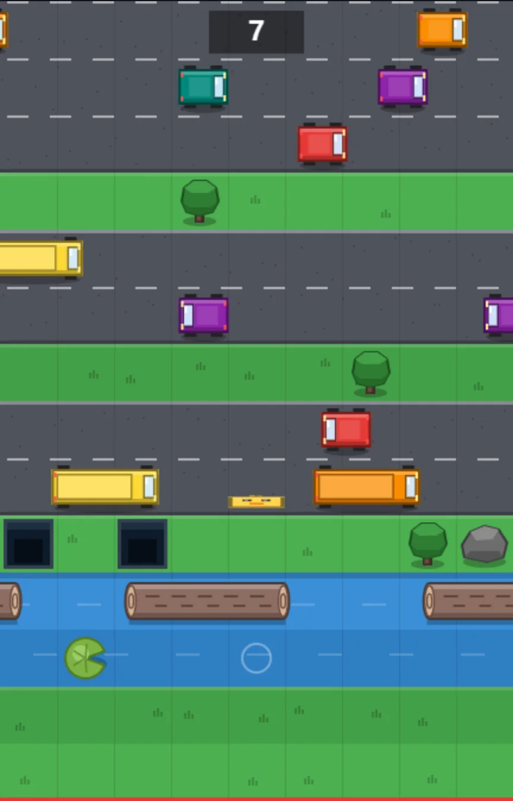

게임 1 · 완전 카피 · 원작 길건너친구들
길 건너기
방향키나 WASD로 한 칸씩 움직여 자동차·열차·강 같은 장애물을 피하며 최대한 멀리 전진하는 게임입니다. 가만히 있으면 뒤에서 붉은 선이 따라오고, 뒤로 4번 연속 가도 끝납니다.
원작은 길건너친구들(Crossy Road)로, 규칙을 따라 만들되 원작의 그림과 소리는 쓰지 않았습니다. 그림은 모두 도형으로 그렸고, 소리는 파일 없이 브라우저가 직접 만듭니다.
- 내가 한 것
- 원작을 분석해 출발점을 정하고, 규칙을 정의하며 reviewer 로 반복 검토해 잘못된 게임 오버 규칙을 바로잡았습니다. 빌드된 게임을 직접 플레이해 설계대로인지 확인하고, 테스터 피드백을 받아 수정했습니다.
- AI(Claude Code)에게 맡긴 것
- 게임 코드 작성과 수정, 브라우저 없이 규칙을 검사하는 도구와 검사, 문서 정리.
PC 키보드 전용